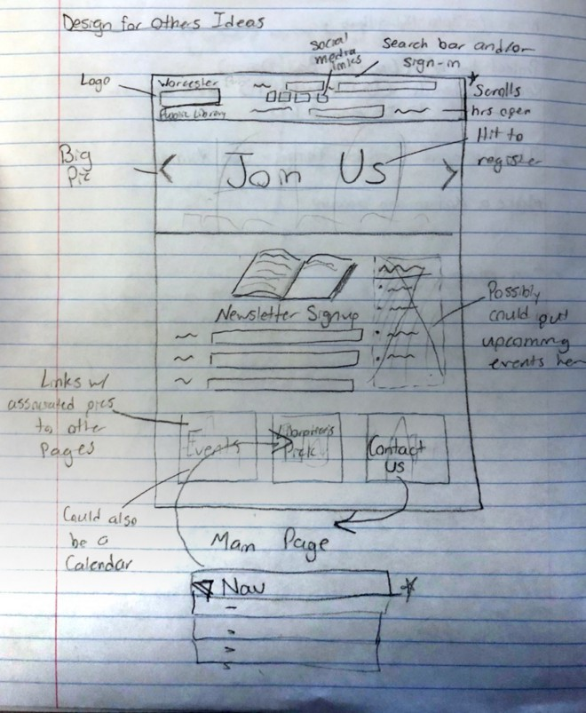
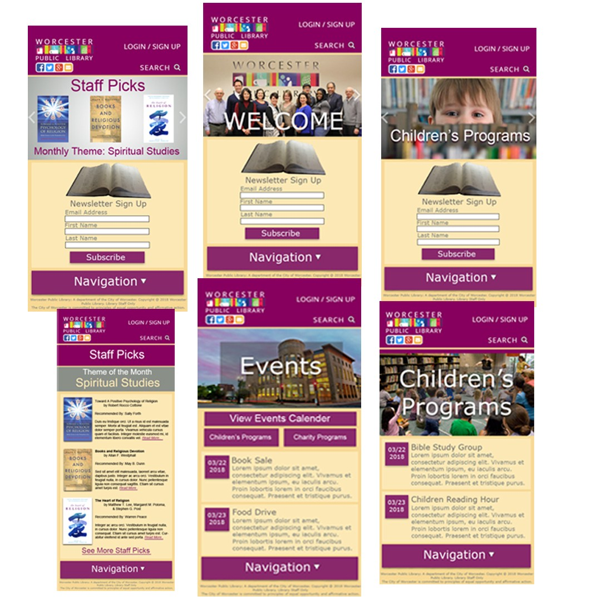
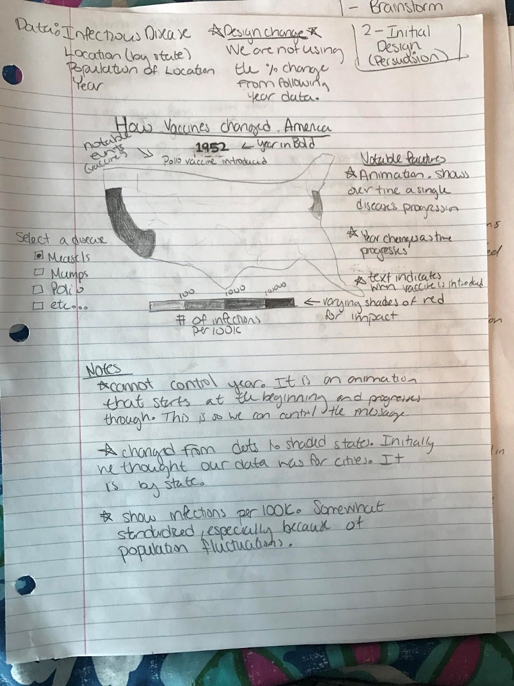
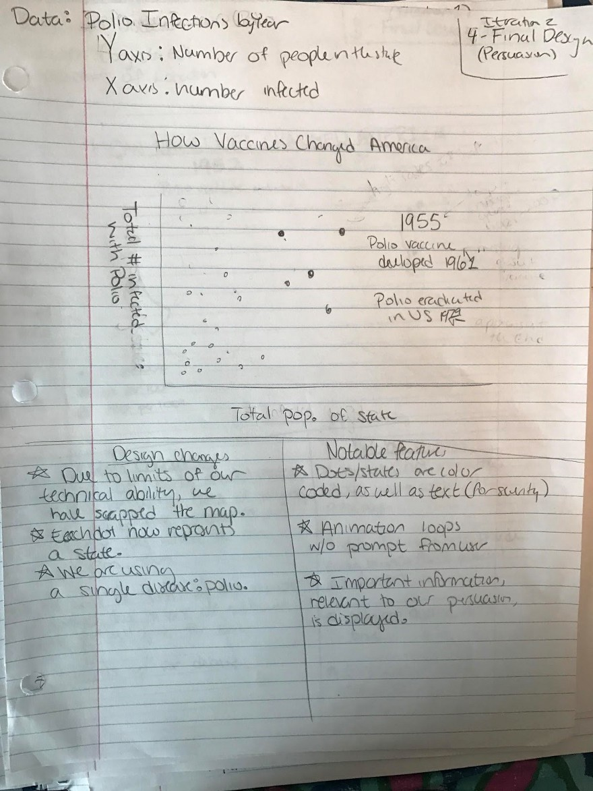
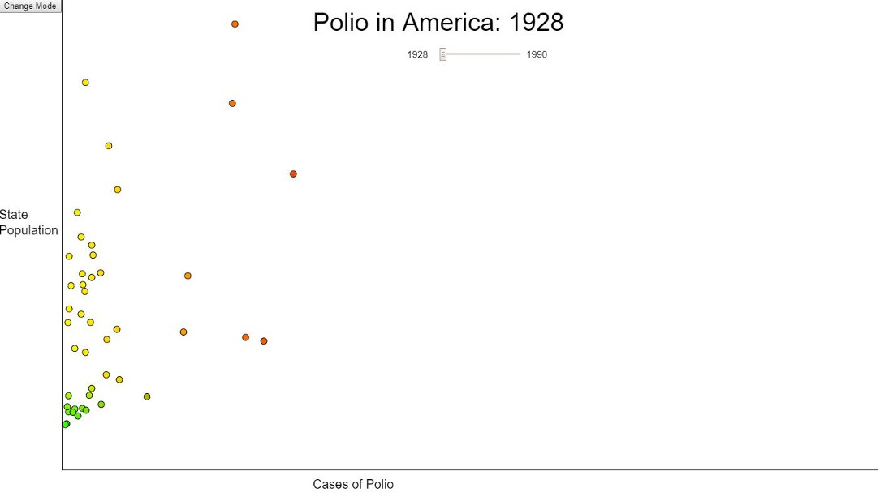
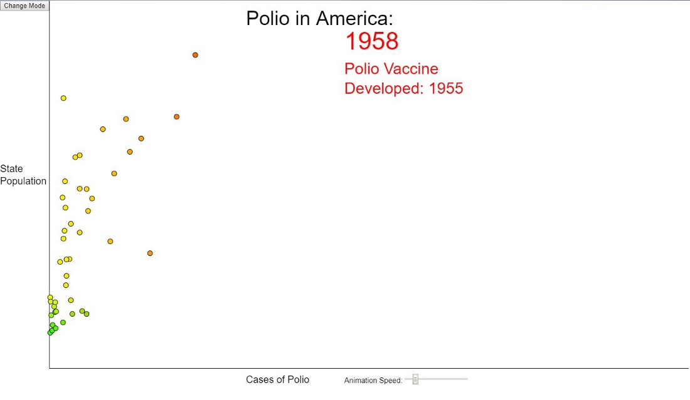
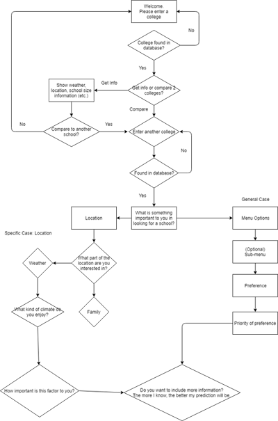
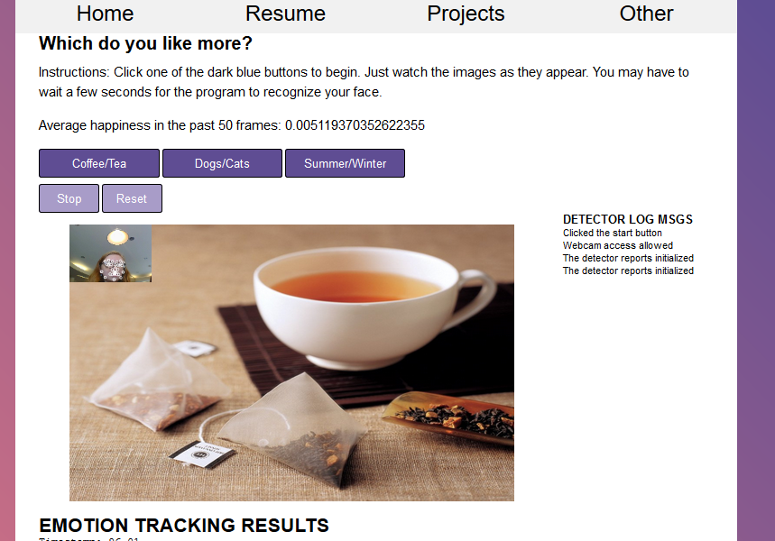

Click on the title of each project to view a more detailed Medium article about the design process.
For the first project, I found an example of good and bad design on the WPI campus.
As an example of good design, I took pictures of a study room in Goddard Hall. It works well for group meetings and office hours.
As an example of bad design, I picked the door leading out of the sub-basement of Alden Hall. The door has no path leading out of it, and is the only outdoor access to the floor.
This project required minimal technical work, as it was just an evaluation of the design of familiar places to get us thinking about usability.
For the second project, we designed mobile website for the Worcester Public Library directed at churches and religious groups. This was the first project that we developed sketches and preliminary designs for. 
We also created an idea board for collecting pictures and concepts: Mood Board
The project only includes a few of the pages that would exist in a completed website. The final product was put together using InVision, a rapid prototyping tool.
The final demo can be previewed here.
The third project centered on data visualization. We used data about the spread of infectious diseases in America from the CORGIS database to create two graphs. The first visualization is intended to convey information in the most factual and informative way possible. The second visualization is intended to present information in a way that is memorable and persuasive.
The technical aspect of this project was difficult because no one in our group was familiar with JavaScript. We had to significantly alter our design plan, which started as a map, so that we could finish the project in time despite the difficulties.
   Eventually, we generated a frequency chart for the data. We used sliders to control the year for the factual representation, and included extra information about the year that the polio vaccine was introduced for the persuasive representation.
You can view the project and experiment with the sliders yourself here.
For the fourth project, we created a chatbot that was intended to help people discuss or get information about a difficult topic. Rather than picking something highly emotional or political, we we chose to create a chatbot that would provide information for incoming college students about two different colleges.
Like the last project, our design plan had to be significantly adjusted and never really came to fruition due to technical difficulties. The project was designed in FlowXO, which set limits on the number of active flows and is difficult to share between group mates. The original, most optimistic design included a complex flowsheet of possible questions, responses, and options.
In the end, we were only able to retrieve a few pieces of information and report them back, due to many HTTP errors and other problems. However, we were still able to implement a part of our proposed flow chart. The implemented bot is temporarily available here.
A demo video of our chatbot can be seen below.
The fifth project focused on using a program to perceive emotions and creating some kind of a reaction in response to that. We used Affectiva, a software which uses a webcam to view the user's face, then recognizes certain facial cues and sorts them into general emotional categories. There are a lot of interesting future uses for software like this, unfortunately, many of them are creepy if you don't like the idea of your computer watching you all the time.
This design evolved a bit differently than the other projects, because at this point everyone was expecting the technical piece to be extremely difficult, but since we were able to take a lot of code from the examples Affectiva has posted on its website. We found that we were actually able to add things into our original design instead of having to take parts out.
The original design decided on your preference between two objects, such as cats or dogs, coffee or tea, and summer or winter.
Because we wanted to program to be able to make some kind of conclusion based on the emotion data it captured, we switched to food and made a program that suggests something to make for dinner, as shown in the demo video below.
The final project was about virtual reality, and creating a web VR game using AFrame, and HTML skeleton for VR. This was my favorite project of the term because I thought it was really interesting to see how much of a game could be built using HTML and some very simple JavaScript alone. Also, Aframe had much better tutorial material than many of the websites we had used before, so I was actually able to learn quite a bit from it within the week we had to do the project.
We still had less time to implement things than what we wanted to do, and the fact that we weren't using real VR hardware generated a lot of errors sometimes, but I still enjoyed the creative aspect of the project. A video demo of the game we created is shown below, and the complete code for the game can be found on this GitHub repository .